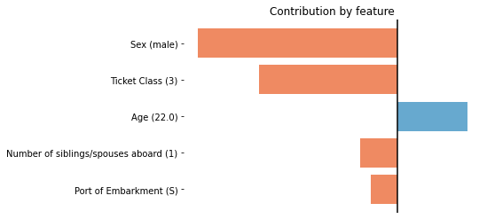

Quickstart#
In this short tutorial we will guide you through a series of steps that will help you getting started with Pyreal.
Get a Feature Contribution Explanation#
To get a feature contribution explanation of a pre-trained model, we can use the
LocalFeatureContribution class. We begin by loading in the model and transformers.
In [1]: import pyreal.applications.titanic as titanic
In [2]: from pyreal.transformers import ColumnDropTransformer, MultiTypeImputer
# Load in data
In [3]: x_orig, y = titanic.load_titanic_data()
# Load in feature descriptions -> dict(feature_name: feature_description, ...)
In [4]: feature_descriptions = titanic.load_feature_descriptions()
# Load in model
In [5]: model = titanic.load_titanic_model()
# Load in list of transformers
In [6]: transformers = titanic.load_titanic_transformers()
The transformers object is a list that includes three types of transformers, specific for this
application:
ColumnDropTransformer: removes features that should not be used in predictionMultiTypeImputer: replaces missing data from all columns with a reasonable replacementOneHotEncoderWrapper: one-hot encodes categorical features. We use the built-in wrapper type, which includes ainverse_transform_explanationfunction.
These transformers transform the data from it’s original state (x_orig) to its
explanation algorithm ready state (x_algorithm). In this case, the explanation algorithm used expects
data in the model ready state (x_model), so x_algorithm == x_model.
Next, we can create the Explainer object, and fit it.
In [7]: from pyreal.explainers import LocalFeatureContribution
In [8]: lfc = LocalFeatureContribution(model=model, x_train_orig=x_orig,
...: transformers=transformers,
...: feature_descriptions=feature_descriptions, fit_on_init=True)
...:
In [9]: lfc.fit()
Out[9]: <pyreal.explainers.lfc.local_feature_contribution.LocalFeatureContribution at 0x7f0240dc0a00>
Finally, we can get the explanation using the .produce() function. We will also visualize
the most contributing features using the visualize model.
In [10]: input_to_explain = x_orig.iloc[0]
In [11]: prediction = lfc.model_predict(input_to_explain) # Prediction: [0]
In [12]: contributions, x_interpret = lfc.produce(input_to_explain)
In [13]: from pyreal.utils import visualize
# Plot a bar plot of top contributing features, by asbolute value
In [14]: visualize.plot_top_contributors(contributions, select_by="absolute", values=x_interpret)
The output will be a bar plot showing the most contributing features, by absolute value.
We can see here that the input passenger’s predicted chance of survival was greatly reduced because of their sex (male) and ticket class (3rd class).